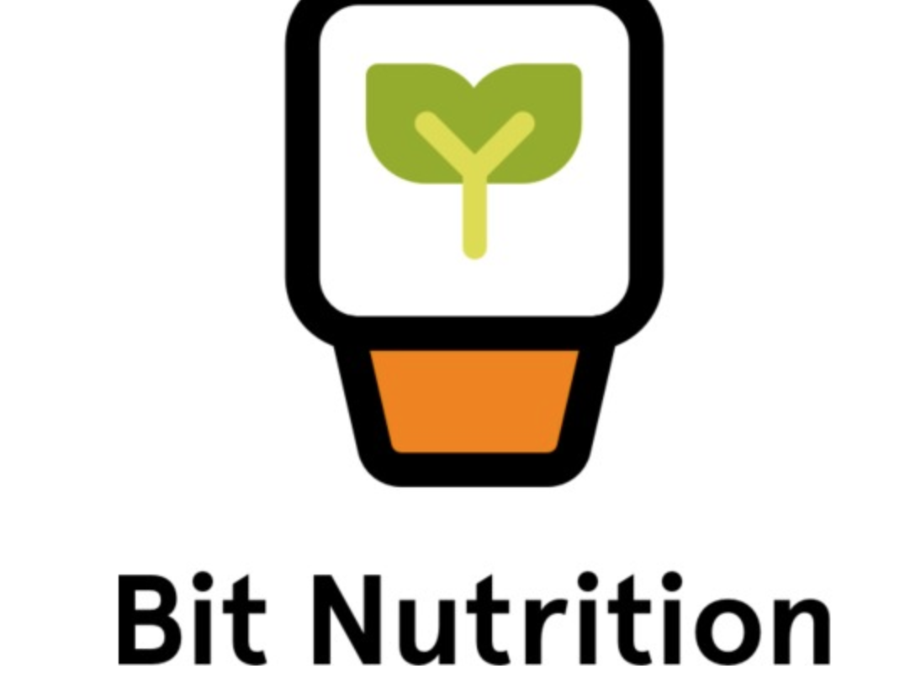
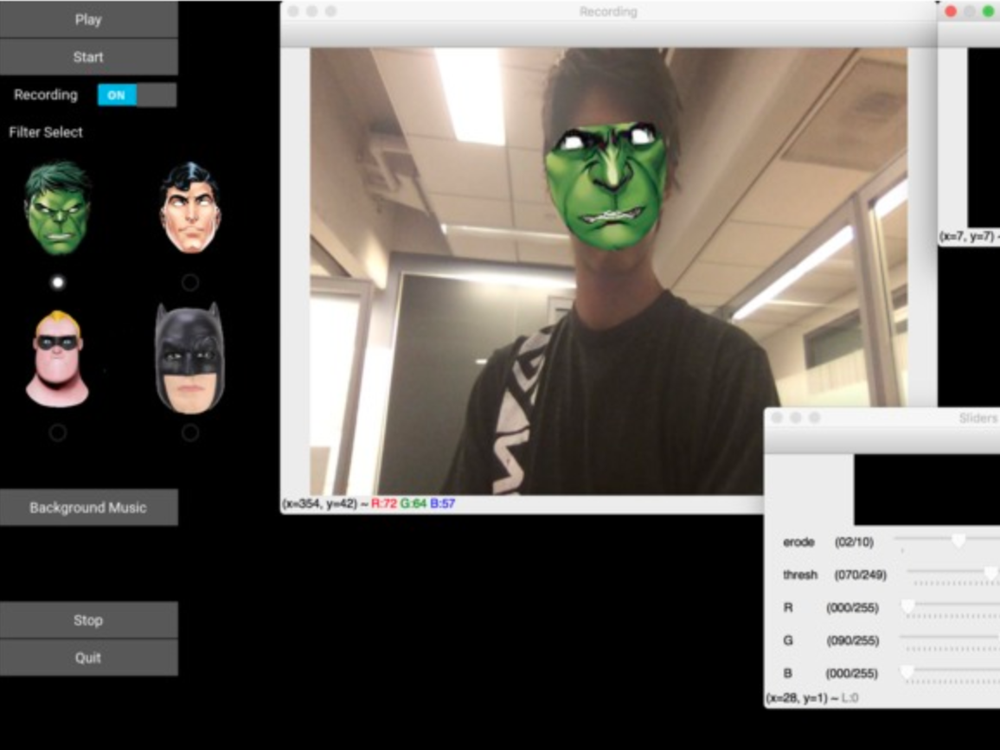
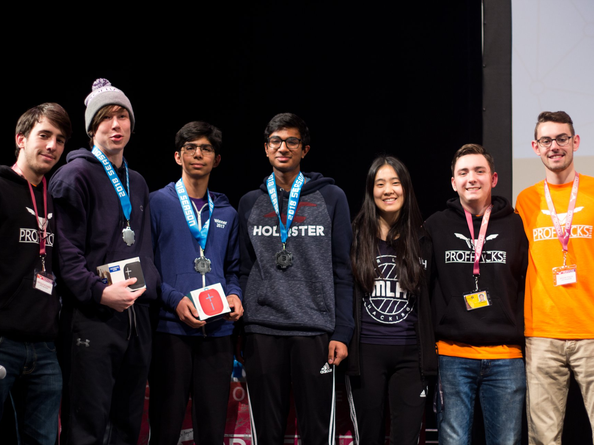
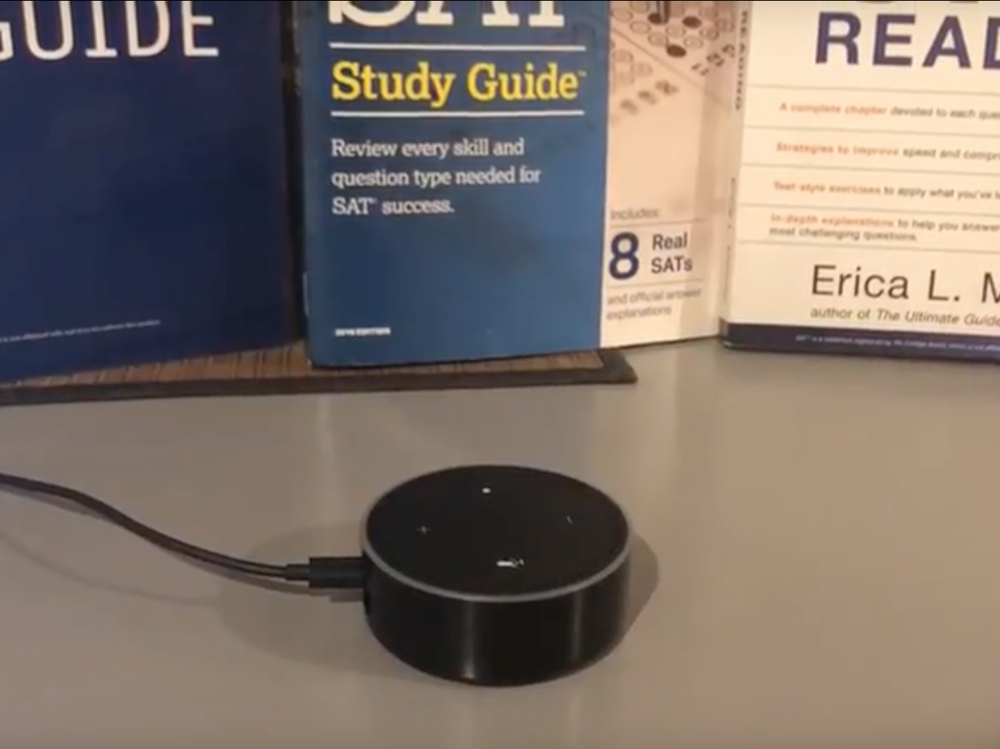
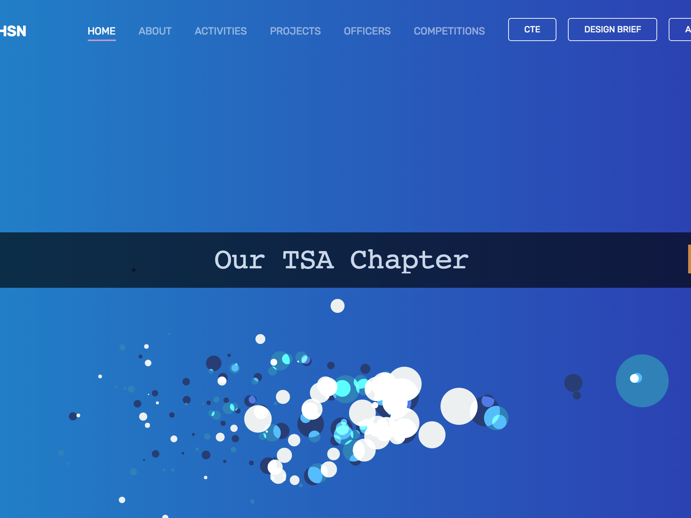

I recently had my first significant experience with open source through a competition called Google Code-In. This is an international competition open to all high school students where you work with one of their partner organizations to support them with their development and live projects. I worked with an organization called XWiki which is a software platform used by both individuals and organizations to enhance internal knowledge sharing.
In my first few tasks, I scoured the Jira (bug tracking platform) issues and developed skills reading and debugging code. I then tackled writing unit tests, eventually moving up to large projects. In all my experiences, I developed the skills to rapidly identify faults in code and create working applications. The company was based in Europe and so, I had to adjust to their time zone. I was loving the work and intended to win, so I spent entire days over a two month period on working with my mentors on new projects. Here, I gained collaboration skills and learned to work with people I hadn’t met before.
I took on this challenge because of a thirst for learning. I instantly recognized, correctly, that this competition would be an amazing learning experience for me, and so, I was willing to sacrifice all my time to improve my skills. As a testament to my learning, I was awarded the Grand Prize Trip to Google HQ! Google Code-In opened the doors to new opportunities, introducing me to the world of open source. I now contribute to open-source in my free time and even have my own open source project.
Learn more about Google Code In!Hack The North is Canada's biggest hackathon, with over 1000 hackers from around the world joining at the University of Waterloo for 36 hours. Here, we created BitNutrition.
BitNutrition scans the barcodes of any food items and using that, it syncs all available nutrition statistics that are then tracked in the database. These nutrition statistics are presented on our ios/android app, and some especially key data is synced to FitBit! We then use these statistics to calculate which nutrients you are lacking and exceeding in as per the daily quotas and based on those values, suggest food for you to try next to even out your diet. These suggestions can be conveniently viewed on the FitBit as well as the mobile app.
Click here to learn more about BitNutrition!PennApps is an international hackathon held at UPenn. Over 1000 hackers join to work on awesome projects that often end up being used in the real world. That said, this time, our team created something a little more fun while learning some new technologies. Our team built Airtunes! AirTunes recognizes 10 different popular dance moves (at any given moment) and generates a corresponding sound. The sounds can be looped and added at various times to create an original song with simple gestures. The user can choose to be one of four different superheroes (Hulk, Superman, Batman, Mr. Incredible) and record their piece with their own personal touch.
For this, we trained a convolutional neural network in Tensorflow with 1000 samples of each gesture, which worked better than manually calculating the angles between the hands and head. The model works with 98% accuracy on the test data set. As for the UI, we designed it using the kivy library in python. There, we added record functionality, the ability to choose the music and the superhero overlay, which was done with the use of dlib and opencv to detect facial features and map a static image over these features.
Click here to learn more about AirTunes!My first hackathon experience was at ProfHacks, where my team and I created Munch, a platform for restaurants to use their wasted food by selling it at discounted prices. We created an all inclusive system featuring an app for customers, a people counter, a restaurant dashboard and even an Alexa skill! I worked on detecting the people entering and exiting the restaurant using openCV which we integrated with our firebase backend. I also created the Alexa skill for customers to access nearby discounts. In this experience, I worked with technologies perfect for a hackathon setting and we got the 3rd place prize!
Click here to learn more about Munch!The Alexa Skills Challenge was my introduction to Alexa and AWS in general. I built a skill called TestQuest. TestQuest allows students and parents an easy way to access standardized test information. It features a variety of intents ranging from asking for a deadline for a specific test to asking for test date recommendations based on your goal score.
For this, I built a web scraper to scrape data from the collegeboard and act websites so that I don't have to manually feed in the dates. Then, I stored this data in DynamoDB so it is accesible to each user and can be updated. I also experimented with different states and through this, I created a conversation flow rather than a simple question and answer app.
Click here to view TestQuest!Our team created an informative website for the TSA Competition. It is fully responsive and features many complex elements and yet, it is designed with core simplicity and intuitive navigation. For this, we won 6th in the nation.
Check it out!